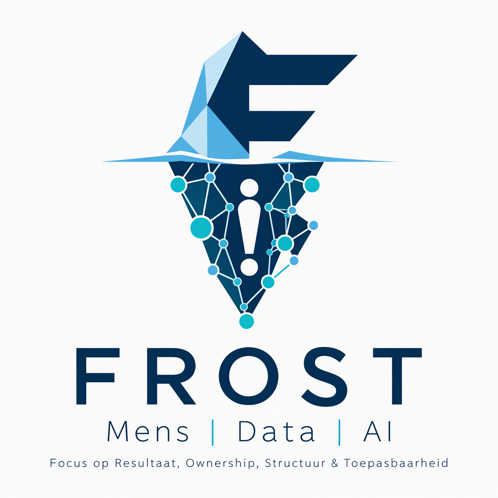
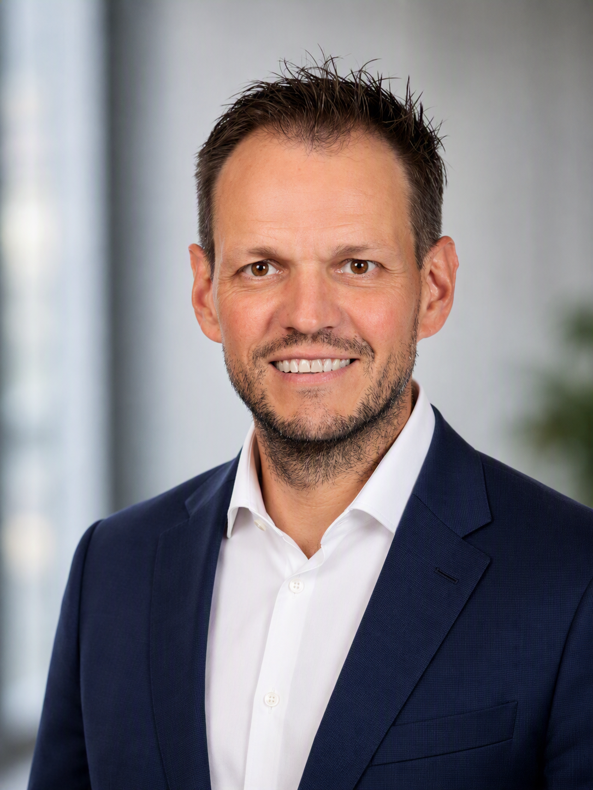

Mens
Verandering begint bij mensen. Met helder eigenaarschap, samenwerking en begrip wordt governance onderdeel van het dagelijks werk.

FROST helpt organisaties om complexe vraagstukken rond data, governance en AI terug te brengen tot praktische oplossingen die werken.

Veel organisaties investeren in data, governance en AI. De uitdaging zit meestal in focus, eigenaarschap, besluitvorming en het daadwerkelijk toepassen van wat bedacht is.
Waarde ontstaat wanneer mensen, data en technologie elkaar versterken.
Verandering begint bij mensen. Met helder eigenaarschap, samenwerking en begrip wordt governance onderdeel van het dagelijks werk.
Niet alle data is even belangrijk. Focus op kritieke data brengt overzicht en ondersteunt betere besluiten, beheersing en resultaten.
AI vraagt om meer dan technologie. Heldere kaders, betrouwbare data en verantwoord gebruik maken toepassingen duurzaam en waardevol.
Organisaties beschikken over duizenden data-elementen, processen en rapportages. De kunst is niet om alles tegelijk te beheersen.
Waarde ontstaat wanneer de aandacht uitgaat naar de data die daadwerkelijk impact heeft op besluitvorming, risico's en resultaten.
Geen extra governance om de governance. Wel heldere afspraken, gerichte keuzes en oplossingen die mensen daadwerkelijk kunnen toepassen.
FROST brengt inhoud, mensen en uitvoering bij elkaar. Altijd gericht op een resultaat dat begrijpelijk, toepasbaar en blijvend is.
Terugbrengen tot de vraagstukken en data die er werkelijk toe doen.
Duidelijk maken wie waarvoor staat en wat nodig is om verantwoordelijkheid te nemen.
Werkbare afspraken en kaders aanbrengen zonder onnodige bureaucratie.
Bouwen aan betrouwbare data, duidelijke samenwerking en duurzame toepassing.
Ik help organisaties om meer waarde uit data te halen. Met ervaring binnen financiële instellingen en de publieke sector combineer ik inhoudelijke expertise met een pragmatische en mensgerichte aanpak.
Mijn kracht ligt in het terugbrengen van complexe vraagstukken naar heldere keuzes, praktisch eigenaarschap en oplossingen die daadwerkelijk gebruikt worden.
Een vraagstuk rond data governance, datakwaliteit, AI of eigenaarschap? Of wil je dat jouw team, management of organisatie er zelf mee leert werken? Ik denk graag mee over een praktische volgende stap.
Praktijkgerichte trainingen waarin data governance, datakwaliteit en AI-kaders begrijpelijk worden en direct toepasbaar zijn in het dagelijks werk.
Compact en inspirerend voor team, management of directie. Complexe onderwerpen helder uitgelegd, met ruimte voor vragen en gesprek.
Samen aan de slag met jullie eigen vraagstukken, zoals kritieke data-elementen of eigenaarschap, met concrete afspraken als resultaat.
Een training, een kennissessie of een workshop: ik denk graag mee over een vorm die past bij jouw team en organisatie.
frost-mda@outlook.com